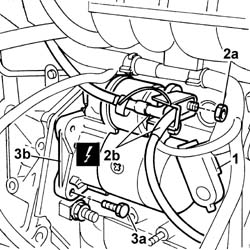

5520B10 starter motor - r+r
- Path
- Procedures > 55 ELECTRICAL EQUIPMENT > 5520 ENGINE STARTING > 5520B starter motor and components > 5520B10 starter motor - r+r
- Kind
- repair procedure (removal / refitting; the operation number is the code)
- Applies to
- engines: 1.1, 1.2 8v; all production periods
- Interactive page
- https://sloeber94.github.io/elrnDB-fPnd/en/#/2752954
Applies to: engines: 1.1, 1.2 8v; all production periods
 Removing
Removing
 Refitting
RefittingPlace the car on a lift.
Disconnect the battery negative terminal.
Raise the car.
1. Open the protective cover.
2. Undo the fixing nut (2a) and disconnect the starter motor electrical wiring (2b).
 | Name | Connector |
|---|---|---|
2b | Starter' motor | A20A |
| Name | Connector |
|---|---|---|
2b | Starter' motor | A20B |
| Name | Connector |
|---|---|---|
2b | Starter' motor | A20C |
3. Undo the fixing bolts (3a) of the starter motor (3b) and remove it.

Applies to: engines: 1.1, 1.2 8v; all production periods
Refitting
RemovingFit the starter motor in place and tighten the fixing bolts to the recommended torque.
 | Fastening | Component | Ø | Value (daNm) |
|---|---|---|---|---|
- | Bolt | ALTERNATOR ASSEMBLY | M8 | 2.7 |
| Name | Connector |
|---|---|---|
- | Starter' motor | A20A |
| Name | Connector |
|---|---|---|
- | Starter' motor | A20B |
| Name | Connector |
|---|---|---|
- | Starter' motor | A20C |
Close the starter motor wiring protective cover.
Lower the vehicle.
Connect the battery negative terminal.
Remove the vehicle from the ramp.